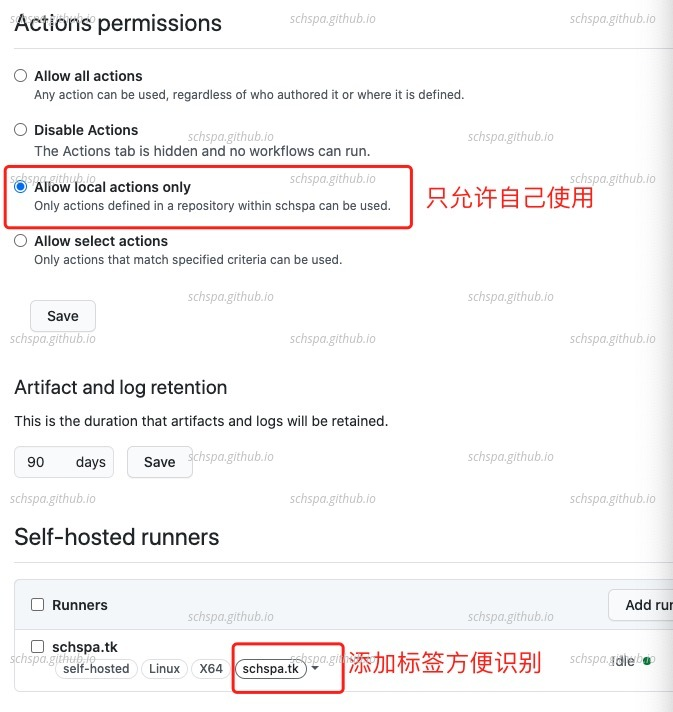

Use Github Action to Sync blogs
Table of Contents
环境介绍
我自己的Blog是通过org-publish来生成的, 生成之后部属在schspa.tk以及github io上，之前每次更新博客之后，我都会向两个服务器上去同步一下博客，
现在github有了github action 并且可以支持使用自己runner服务，这样我们就可以利用github action来动态在更新github action时自动更新博客了。
| 博客 | 服务器 | 版本 |
| schspa.tk | schspa.tk | Ubuntu 18.04 |
| schspa.github.io | github | github |
Runner 配置
安装github runner
按照下面的官方文档可以很容易的部属好runner，部属过程很顺利，没有遇到任何错误
https://docs.github.com/en/free-pro-team@latest/actions/hosting-your-own-runners/adding-self-hosted-runners
自启动runner
按照官方的wiki，linux下可以使用官方自己给的systemd服务配置文件就可以配置好开机自启动
https://docs.github.com/en/free-pro-team@latest/actions/hosting-your-own-runners/configuring-the-self-hosted-runner-application-as-a-service
ubuntu@ip-172-31-43-98:~/actions-runner$ sudo ./svc.sh install Creating launch runner in /etc/systemd/system/actions.runner.schspa-schspa.github.io.schspa.tk.service Run as user: ubuntu Run as uid: 1000 gid: 1000 Created symlink /etc/systemd/system/multi-user.target.wants/actions.runner.schspa-schspa.github.io.schspa.tk.service → /etc/systemd/system/actions.runner.schspa-schspa.github.io.schspa.tk.service. ubuntu@ip-172-31-43-98:~/actions-runner$ sudo ./svc.sh start /etc/systemd/system/actions.runner.schspa-schspa.github.io.schspa.tk.service ● actions.runner.schspa-schspa.github.io.schspa.tk.service - Github sync Runner Loaded: loaded (/etc/systemd/system/actions.runner.schspa-schspa.github.io.schspa.tk.service; enabled; vendor preset: enabled) Active: active (running) since Fri 2020-10-09 22:54:47 CST; 21ms ago Main PID: 2032 (runsvc.sh) Tasks: 2 (limit: 1140) CGroup: /system.slice/actions.runner.schspa-schspa.github.io.schspa.tk.service ├─2032 /bin/bash /home/ubuntu/actions-runner/runsvc.sh └─2038 /bin/bash /home/ubuntu/actions-runner/runsvc.sh Oct 09 22:54:47 ip-172-31-43-98 systemd[1]: Started Github sync Runner. Oct 09 22:54:47 ip-172-31-43-98 runsvc.sh[2032]: .path=/usr/local/sbin:/usr/local/bin:/usr/sbin:/usr/bin:/sbin:/bin:/usr/games:/usr/local/games:/snap/bin
runner权限设置
由于runner直接安装在了host机上，没有docker等容器的保护，所以权限方面要格外设置好，放置不法分子利用这个runner来攻击服务器。
下面是我自己的权限设置，只允许自己使用

Figure 1: runner权限设置
设置在push操作时自动更新
配置文件：
name: sync to schspa.tk
on:
push:
branches:
- master
jobs:
sync:
runs-on: schspa.tk
steps:
- name: Sync blogs
run: bash -c "cd ~/sites && git fetch && git reset --hard origin/master"
很简单，上面的配置文件告诉github，在收到master分支的push事件时，就自动在标签为schspa.tk的runner上自动执行下面的Sync blogs的步骤。